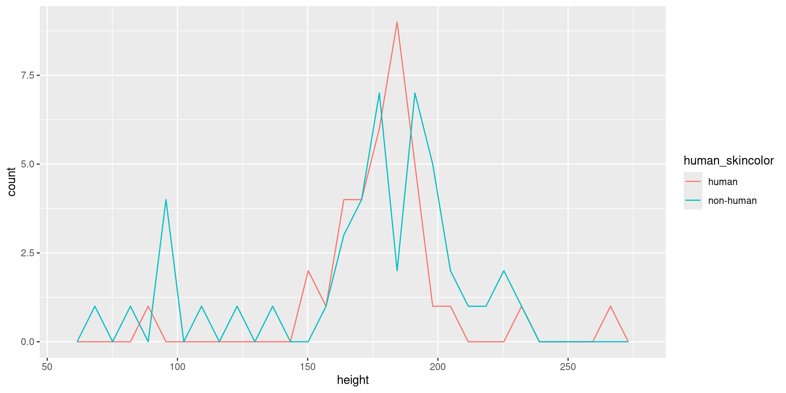

install.packages("dplyr")
install.packages("gapminder")
install.packages("gganimate")
install.packages("ggplot2")
install.packages("ggstatsplot")
install.packages("fivethirtyeight")
install.packages("tidyverse")
install.packages("devtools")
devtools::install_github("rstudio-education/dsbox")Modern Statistical Computing
2. ggplot
Pompeu Fabra University
ggplot(data = starwars) +
geom_point(mapping = aes(x = height, y = mass))
ggplot(data = starwars) +
geom_point(mapping = aes(x = height, y = mass)) +
geom_smooth(mapping = aes(x = height, y=mass), method='lm')
ggplot(data = starwars) +
geom_point(mapping = aes(x = height, y = mass)) +
geom_smooth(mapping = aes(x = height, y=mass), method='lm', se=FALSE) #remove standard error
mapping is shared, pass it to ggplot and all geoms will use it (by default)
ggplot(data = starwars, mapping = aes(x = height, y = mass)) +
geom_point() +
geom_smooth(method='lm', se=FALSE)
Point color and shape
Set point color and shape according to human_skincolor
mycols= c('fair','white','light','brown','dark')
starwars$human_skincolor= ifelse(starwars$skin_color %in% mycols, 'human', 'non-human')
ggplot(data = starwars, aes(x = height, y = mass)) +
geom_point(aes(color= human_skincolor, shape= human_skincolor)) +
geom_smooth(method='lm', se=FALSE)
Line types
ggplot(data = starwars, aes(x = height, y = mass, color=human_skincolor)) +
geom_point(aes(shape=human_skincolor)) +
geom_smooth(aes(linetype= human_skincolor), method='lm', se=TRUE)
Histograms
ggplot(starwars, aes(x=height, fill=human_skincolor)) +
geom_histogram(alpha=0.2, color='black') #alpha is the color transparency
ggplot(starwars, aes(x=height, color=human_skincolor)) +
geom_freqpoly() ggplot(starwars, aes(x=height, color=human_skincolor)) +
geom_density() 
Violin plot
ggplot(starwars, aes(x=human_skincolor, y=height)) +
geom_point() +
geom_violin()
boxplot(height ~ human_skincolor, data=starwars, names=c('No','Yes'), xlab='Human skin color')
ggplot(starwars, aes(x=human_skincolor, y=height)) +
geom_point()
Lines plot

Package ggstatsplot
Plot correlations for hate crime data
ggcorrmat(hc[,-1])
Non-animated plot
A non-animated plot (all years are shown simultaneously)
ggplot(gapminder, aes(x=gdpPercap, y=lifeExp)) +
geom_point(aes(colour=continent, size=pop), alpha = 0.7, show.legend = TRUE) +
scale_size(range = c(2, 12)) + #scale point sizes (make them larger)
scale_x_log10() +
labs(x='GDP per capita', y='Life expectancy')

transition_states
transition_time treats time as continuous, e.g. adds intermediate frames between years. transition_states evolves in a more “discrete” manner
Example: airquality data
ggplot(airquality, aes(Day, Temp)) +
geom_point(colour = 'steelblue') +
transition_states(Month) +
labs(title='Month: {closest_state}', y='Temperature (Fahrenheit)')
transition_reveal
You can reveal new points in an increasing fashion, as done below

Further example. GDP over time
Animated histogram: distribution of GDP/capita over time
ggplot(gapminder, aes(x=gdpPercap)) +
geom_histogram(bins=20) +
transition_states(year) +
labs(title='Year: {closest_state}', x='GDP per capita')
A (non-animated) violin plot
Sometimes a non-animated figure is more effective
p= ggplot(gapminder, aes(x=factor(year), y=gdpPercap)) +
geom_point() +
geom_violin() +
labs(x="Year", y="GDP per capita")
p